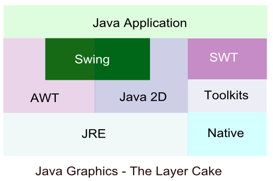
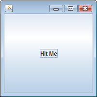
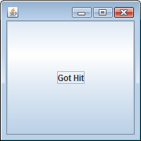
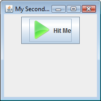

Java Graphics Interface (API) I
Basics - 2017

Because there is none that fits all.

For more information on AWT, Swing, and SWT, go to AWT, Swing or SWT: Which one?.
But this page will be focused on the Swing among the list of available GUI libraries.
The Swing components of the Java library provide a GUI. The javax.swing package contains classes to create a variety of components using the style of the native operating system. These can be made available by including the statement:
import javax.swing.*;
In this first sample code, we'll use a JFrame class. A JFrame is the object which represents a window on our screen. If we want a button, we put it on the JFrame. If we want a radio button, we put it on the JFrame. So, once we have a JFrame, we can put widgets on it just by adding them to the JFrame.
Let's look at our first code to see what we can do with JFrame and JButton:
import javax.swing.*;
public class FirstWindow {
public static void main(String[] args) {
JFrame myFrame = new JFrame();
JButton myButton = new JButton("Hit Me");
myFrame.setDefaultCloseOperation(JFrame.EXIT_ON_CLOSE);
myFrame.getContentPane().add(myButton);
myFrame.setSize(200,200);
myFrame.setVisible(true);
}
}
What we get from the code is the huge button which fills the whole window:

Let's take a look at the code line by line.
- Make a frame
JFrame myFrame = new JFrame();
- Make a button widget
JButton myButton = new JButton("Hit Me");We pass the button constructor the text Hit Me for its label. - Add the button widget to the frame.
myFrame.getContentPane().add(myButton);
Note that we're not adding the button directly to the frame. Because it's just a frame (trim) around the window. To put something on the window, we need a window pane. So, before we add button, we call getContentPane(). - Then, we set the size and make it visible.
myFrame.setSize(200,200); myFrame.setVisible(true);
If we don't make it visible, we won't see anything. - The line of code:
myFrame.setDefaultCloseOperation(JFrame.EXIT_ON_CLOSE);
make the program quit as soon as we close the window.
The button we made in the previous section does not respond to the click. Well, it did. When we press/release the button it shows status: pressed or released. What is missing is the event. Before we move on to the event, let's look at the following basics of Swing Rendering:
- Events
The way that Swing receives and processes events is key to understanding how threads interact within Swing and how our application threads interact with Swing and AWT events. - Painting
Swing painting is the process by which Swing manages application and system request to update the display - Rendering
Swing rendering is the process by which Swing calls its own internal code as well as our application code in order to render components' contents. - Double-Buffering
Swing uses a back buffer to ensure smooth updates to the screen. - Threading
Now, let's look at the events.
How do we get the button to do something specific when we click it?
We need two things:
- A method to be called when we click.
This is for the thing we want to happen as a result of the button click. - A way to know when to trigger that method.
We need a way to know when we click the button.
Events in Java can come from the native system such as a window becoming visible or mouse click, or from Java itself such as a request spawn from an application. All of these events are put into a queue of events. The object java.awt.EventQueue is responsible for pulling the events off of this queue and dispatching them as appropriate. We'll dig more into this subject later if we have a chance. But in this section, we'll deal with more basic things about the event, especially the events related to the GUI.
Suppose we want to change the button label from Hit Me to "Got Hit" when we hit the button. The method we can use at the click event may be something like this:
public void changeLabel() {
myButton.setText("Got Hit");
}
However, how will we know when the button is clicked?
The process of getting and handling an event is called event-handling. It can be summarized as:
- The button needs to know what event we care.
We usually don't care about any intermediate events such as button-is-being-pressed, button-is-being-released, or how long it's been pressed, and so on. In our case, all we need to know is whether the button is clicked or not. - The button needs a way to notify us back when a button clicked event occurs.
If we care about the button's events, we should implement an interface saying that "I'm listening for that event."
A listener interface is the channel of communication between the listener(us) and event source(the button).
The Swing components are event sources which are objects that can turn user actions into events. All of these events are put into a queue of events. The object java.awt.EventQueue is responsible for pulling the events off of this queue and dispatching them as appropriate.
An event source creates an event object when the user does something that user cares. Every event type has a matching listener interface. Here, we need to do two things:
- Declare that we are implementing it.
- Write implementation methods for every method in the interface.
For example, for mouse events, there is only one event object which is MouseEvent, but there are several different event methods, representing the different types mouse events.
Here is the summary:
- Listener
If our class wants to know about the button's ActionEvents, we implement the ActionListener interface. The button should know we care and we're interested, so we register or subscribe with the button by calling its addActionListener(this) and passing an ActionListener reference to it (this).
On the other side, the button should have a way to call us back when the event occurs so that it calls the method in the listener interface. As an ActionListener, we must implement actionPerformed(). - Event Source
The button is a source of ActionEvents. So, it should know which objects are interested listeners. The button has an addActionListener() method to give interested listeners a way to register the button.
So, when the listener invokes the addActionListener(). the button takes the parameter (a reference to the listener object, this) and stores it in a list. When the user clicks the button, the button calls the actionPerformed() method on each listener in the list.
import javax.swing.*;
import java.awt.event.*;
public class FirstWindow implements ActionListener {
JButton myButton;
public static void main(String[] args) {
(new FirstWindow()).go();
}
public void go() {
JFrame myFrame = new JFrame();
myButton = new JButton("Hit Me");
myButton.addActionListener(this);
myFrame.getContentPane().add(myButton);
myFrame.setDefaultCloseOperation(JFrame.EXIT_ON_CLOSE);
myFrame.setSize(200,200);
myFrame.setVisible(true);
}
public void actionPerformed(ActionEvent event) {
myButton.setText("Got Hit");
}
}
Run and click the button, we'll have the following button with the label changed to Got Hit:

Here are lines related to the event in the code:
-
import java.awt.event.*;
This new import is for the package that ActionListener and ActionEvent are in. -
public class FirstWindow implements ActionListener
This line implement the interface. It says "an instance of FirstWindow is-a ActionListener." So, only the ActionListener implementer gets the button events. -
myButton.addActionListener(this);
This registers our interest with the button. This says to the button, "Add me to your list of listeners." The argument we are passing should be an object from a class that implements ActionListener. -
public void actionPerformed(ActionEvent event) { myButton.setText("Got Hit"); }This implements the ActionListener interface's actionPerformed() method() method. This is the actual event-handling method.
The button calls this method to let us know an event happened. It sends us an ActionEvent object as the argument.
The following code is almost similar to the previous code:
import javax.swing.*;
import java.awt.event.*;
public class SecondWindow extends JFrame
implements ActionListener {
ImageIcon pressIcon = new ImageIcon("press.png");
JButton myButton = new JButton("Hit Me", pressIcon);
public static void main(String[] args) {
new SecondWindow();
}
public SecondWindow() {
super("My Second Window");
JPanel panel = new JPanel();
setSize( 200,200 );
setDefaultCloseOperation( EXIT_ON_CLOSE );
add(panel);
panel.add(myButton);
myButton.addActionListener(this);
setVisible( true );
}
public void actionPerformed(ActionEvent event) {
myButton.setText("Got Hit");
}
}

We're creating a class to represent the GUI to which components can be added to build the interface. We declares a subclass of Swing's JFrame class using the extends keyword. So, the SecondWindow class inherits attributes and behaviors that allow the user to move, resize, and close the window.
The code includes the following:
-
super("Swing Window");The title of the window specified as a String argument to the inherited super() method of the JFrame class. -
setSize( 200,200 );
The size of the window specified as width and height in pixels as arguments to its setSize() method. -
setVisible( true );
Display the window. -
add(panel); panel.add(myButton);
The constructor is adding a JPanel container component to the window, in which smaller component can be added, using the inherited add() method of the JFrame class. - By default, a JPanel container employs a FlowLayout layout manager that lays out components in left-to-right lines, wrapping at the right edge of the window.
-
ImageIcon pressIcon = new ImageIcon("press.png"); JButton myButton = new JButton("Hit Me", pressIcon);The Swing JButton class creates a push button component that can be added to a graphical interface such as JPanel. The JButton class is created with the new keyword and its constructor takes a String argument specifying text to be displayed on the button.
Images can appear on buttons too. An ImageIcon object must first be created to represent the image, specifying the image file name as the argument to its constructor. Typically the image will be located alongside the program but the argument can include the path for images outside the local directory.
Specify the name of the ImageIcon object as the argument to the JButton constructor to display that image on the button, or specify a String and ImageIcon as its two arguments to display both text and the image. The directory of the press.png is "." as in ./bin or ./src.
setDefaultCloseOperation( EXIT_ON_CLOSE );What to do when the user closes the window.
When the program is intended for deployment in a single Java archive (JAR), image resources should be loaded by a ClassLoader() object before creating an ImageIcon objects to represent them. The following code reflects this situation:
The line below should be changed
ImageIcon pressIcon = new ImageIcon("press.png");
to
// ImageIcon pressIcon = new ImageIcon("press.png");
ClassLoader loader = this.getClass().getClassLoader();
java.net.URL pressURL = loader.getResource("press.png");
ImageIcon pressIcon = new ImageIcon( pressURL );
In the updated code, the image file is in bin directory.
Specifying the resource file name or path to the getResource() method of a ClassLoader() returns a URL, which can be used as the argument to the IamgeIcon() constructor.
Here is the new code:
import javax.swing.*;
import java.awt.event.*;
public class SecondWindow extends JFrame
implements ActionListener {
//ImageIcon pressIcon = new ImageIcon("press.png");
ClassLoader loader = this.getClass().getClassLoader();
java.net.URL pressURL = loader.getResource("press.png");
ImageIcon pressIcon = new ImageIcon( pressURL );
JButton myButton = new JButton("Hit Me", pressIcon);
public static void main(String[] args) {
new SecondWindow();
}
public SecondWindow() {
super("My Second Window");
JPanel panel = new JPanel();
setSize( 200,200 );
setDefaultCloseOperation( EXIT_ON_CLOSE );
add(panel);
panel.add(myButton);
myButton.addActionListener(this);
setVisible( true );
}
public void actionPerformed(ActionEvent event) {
myButton.setText("Got Hit");
}
}
Ph.D. / Golden Gate Ave, San Francisco / Seoul National Univ / Carnegie Mellon / UC Berkeley / DevOps / Deep Learning / Visualization